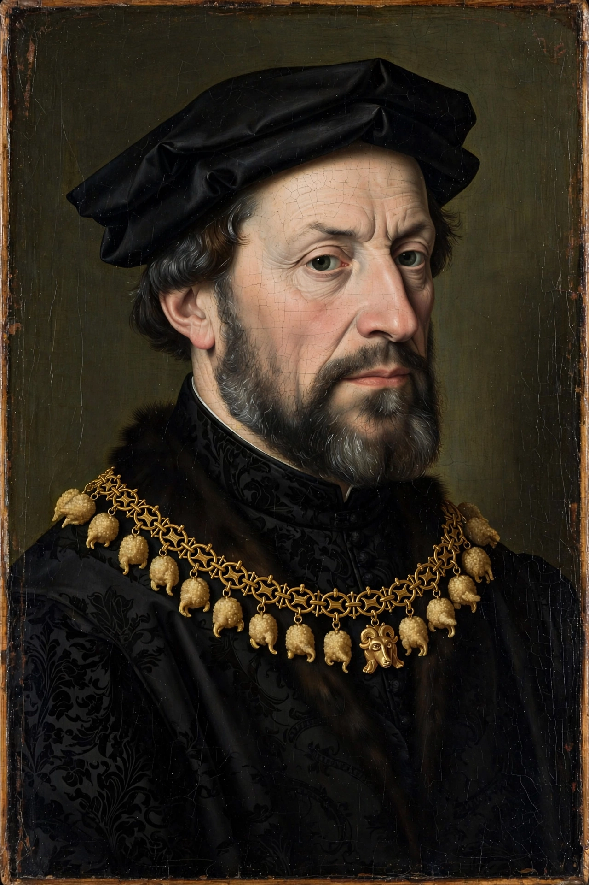

From Wikipedia, the free encyclopedia
| Philip the Good | |
|---|---|
| Duke of Burgundy | 10 September 1419 – 15 June 1467 |
| Born | 31 July 1396, Dijon, Burgundy |
| Died | 15 June 1467, Bruges, Flanders |
| Predecessor | John the Fearless |
| Successor | Charles the Bold |
| Spouses | Michelle of Valois; Bonne of Artois; Isabella of Portugal |
| Founded | Order of the Golden Fleece (1430) |
Philip III, known as Philip the Good (French: Philippe le Bon; 31 July 1396 – 15 June 1467), was Duke of Burgundy from 1419 to 1467. Under his long rule the Burgundian territories in the Low Countries and eastern France were consolidated into a coherent state whose court — at Bruges, Lille, and Brussels — was the most splendid in Europe, and whose wealth rivalled that of kingdoms.
Philip succeeded at 23 after his father, John the Fearless, was murdered at Montereau during a parley with the Dauphin's men. Seeking vengeance, he allied Burgundy with England by the Treaty of Troyes (1420); Burgundian troops captured Joan of Arc in 1430 and handed her to the English. In 1435 he reconciled with France at the Congress of Arras, receiving the Somme towns and exemption from homage in return for abandoning the English alliance — a turning point of the Hundred Years' War.
By purchase, marriage, and inheritance Philip added Namur, Brabant, Limburg, Holland, Zeeland, Hainaut, and Luxembourg to his domains, creating the Burgundian Netherlands. He centralised administration, convened the first States General of the Netherlands in 1464, and in 1430 founded the chivalric Order of the Golden Fleece. The Feast of the Pheasant (1454) at Lille, at which he vowed a crusade he never undertook, epitomised his court's theatrical magnificence.
Philip employed Jan van Eyck as court painter and diplomatic agent, supported the composers of the Burgundian School such as Guillaume Du Fay, and assembled a library of some 900 illuminated manuscripts, the finest of its age. He was succeeded by his son Charles the Bold.
Philip the Bold · Duchy of Burgundy · Order of the Golden Fleece
